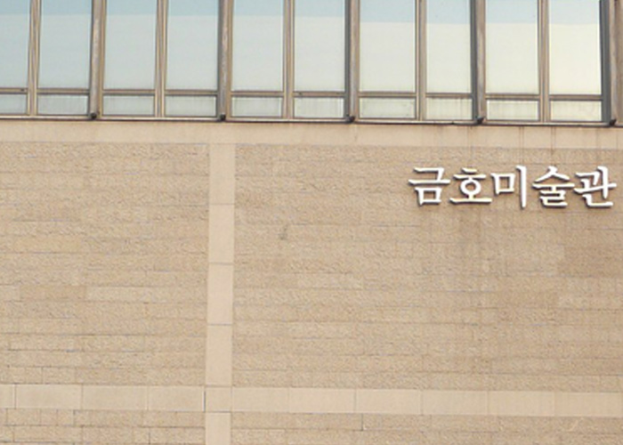
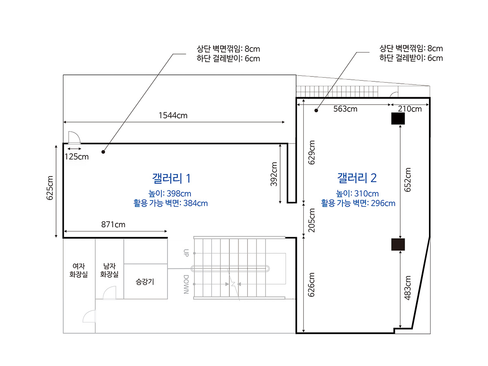
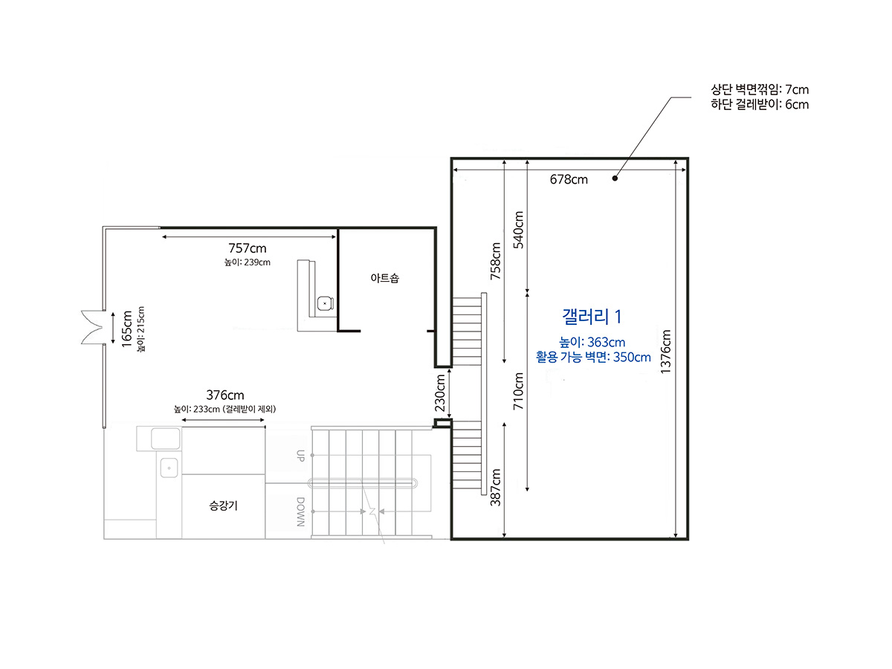
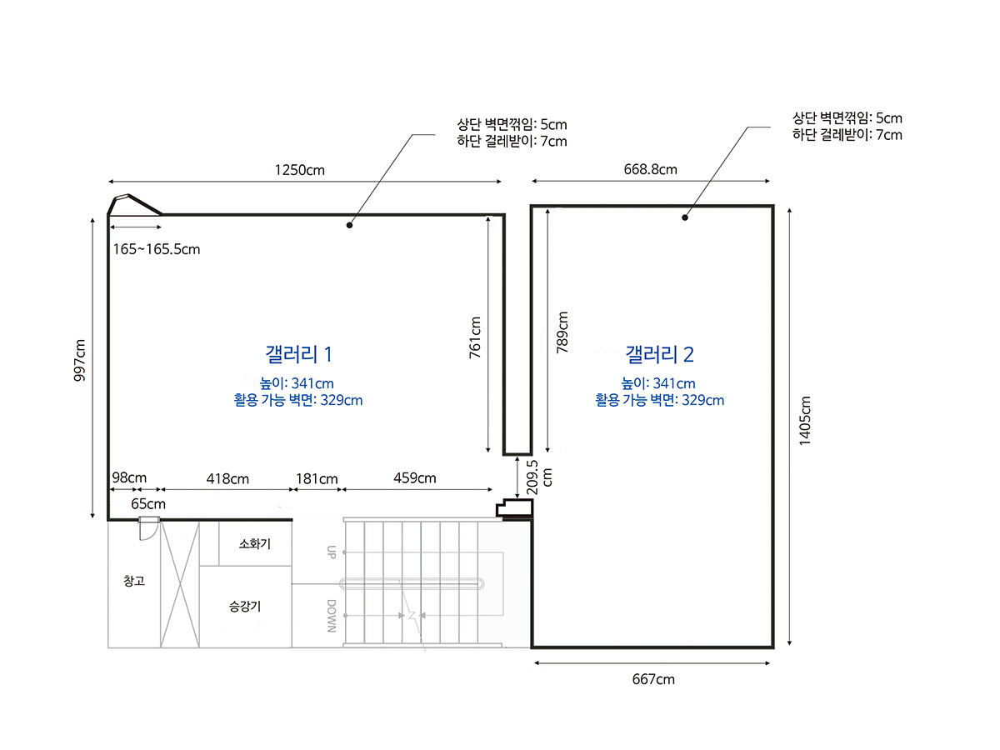
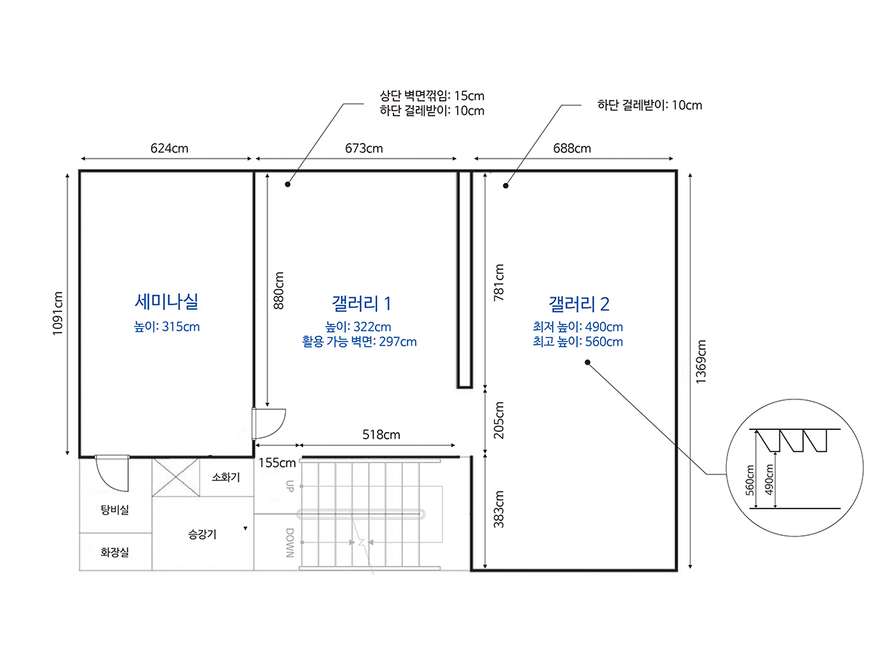

금호 미술관
사회공헌을 위해 노력하는 대표적인 메세나 기관
금호 미술관을 소개합니다
인사말
금호미술관은 1989년 금호갤러리를 시작으로 한국미술의 발전과 사회공헌을 위해 노력하는 대표적인 메세나 기관으로 자리잡아 왔습니다.
개관 이래 신진작가들을 발굴 지원해왔으며, 1996년 금호미술관으로 확장 및 이전하면서 다양한 전시 및 프로그램을 통해 미술인을 후원하고 관람객들의 문화적 향유 기회를 제공해 왔습니다. 금호미술관은 한국미술을 대표할 만한 중견 미술인들의 초대전과 현대미술의 흐름을 조망하는 다양한 기획전을 개최하여 전문가와 일반 관객들에게 미적 영감을 제공하였습니다.
2000년대 중반 이후로는 디자인 · 건축 영역으로 전시 주제를 확장하면서 일상 속에 녹아 든 예술의 자취를 확인해보고자 노력하고 있습니다.
2000년대 중반부터 젊은 작가들을 적극적으로 지원하기 위하여 공모프로그램인 금호영아티스트와 창작공간을 지원하는 금호창작스튜디오를 운영함으로써 금호문화재단의 설립취지인 “영재는 기르고, 문화도 가꾸고”를 실천하고 있습니다. 1987년부터 운영하고 있는 금호예술아카데미를 통해 미술품 수집, 보존, 연구 및 전시와 더불어 미술관의 중요한 역할인 교육에 중점을 두고 있으며, 이를 통해 미술관의 공공적 기능을 더욱 확고히 하고 미술관의 문턱을 낮추어 올바른 문화교육을 지향하고자 합니다.
앞으로도 금호미술관은 다채로운 전시와 연계프로그램을 통하여 관람객에게 풍요로움과 휴식을 제공하는데 더욱 정진할 것을 약속드립니다.
감사합니다.
관람시간
매주 월요일을 제외한 평일과 주말 오전 10시 ~ 오후 6시(오후 5시 30분까지 입장 제한)
미술관 전시장 내 관람객이 120명이 초과될 경우 입장이 제한될 수 있습니다.
시설안내
지하 3층, 지상 4층으로 건축되었으며, 지하 1층부터 3층까지 4개 층에 총 7개의 전시실이 있습니다. 부대시설로는 3층에 교육기능을 담당하는 세미나실과 관람객에게 휴식을 제공하는 1층 카페테리아 그리고 각종 디자인 용품과 아트 상품을 판매하는 아트샵이 있습니다.
- 
- 지하 1층에 위치한 제 1전시장은 두 개의 공간으로 나뉘어 있으며, 104.52m², 높이 3.98m의 메인 섹터와 넓이 126.55m², 높이 3.10m의 보조 섹터로 구성되어 있습니다.
- 
- 지상 1층에 위치한 제 2전시장은 99.4m², 높이 3.63m의 공간으로 구성되어 있습니다.
- 
- 지상 2층에 위치한 제 3전시장은 두 개의 공간으로 나뉘어 있으며, 131.84m², 높이 3.41m의 메인 섹터와 넓이 100.82m², 높이 3.41m의 보조 섹터로 구성되어 있습니다.
- 
- 지상 3층에 위치한 제4전시장은 두 개의 공간으로 나뉘어 있으며, 넓이 111.46m², 높이 3.22m의 메인 섹터와 넓이 79.67m², 높이 4.9 ~ 5.6m² 보조 섹터로 구성되어 있습니다.
세미나실은 넓이 68.10m², 높이 3.1미터의 공간에 약 40석의 좌석으로 구성되어 있으며, 프레젠테이션이 가능한 노트북과 DVD 영상장비, 피아노가 준비되어 있습니다.